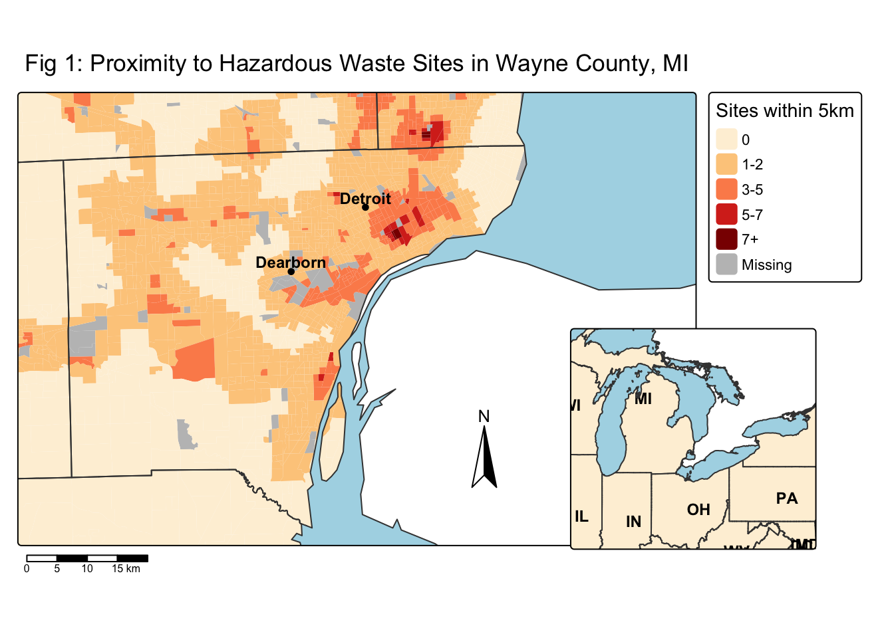
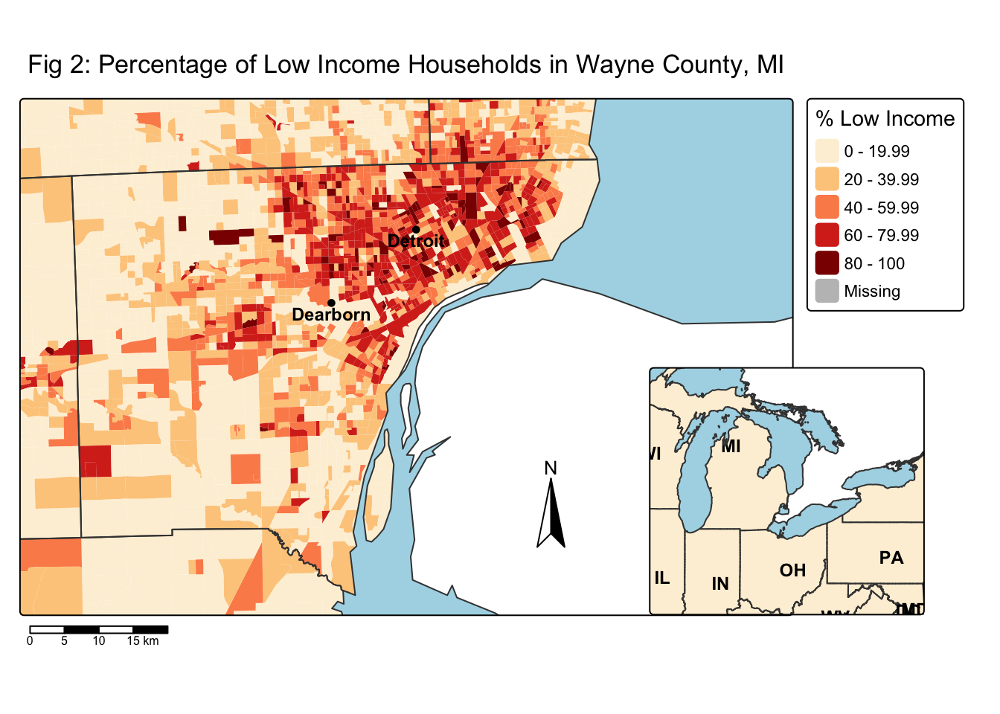

library(tidyverse)
library(sf)
library(here)
library(tmap)
library(stars)
library(terra)EDS 223 HW#1
Assessing proximity of hazardous waste disposal sites to low income communities
Purpose:
The purpose of this document is to practice geospatial data analysis by creating visually appealing maps that display an environmental injustice in Michigan’s Murray County.
Workflow:
1) Load in the relevant libraries
2) Read in geodatabase of EJScreen data at the Census Block Group level
ejscreen <- sf::st_read(here::here("data", "ejscreen","EJSCREEN_2023_BG_StatePct_with_AS_CNMI_GU_VI.gdb"))Reading layer `EJSCREEN_StatePctiles_with_AS_CNMI_GU_VI' from data source
`/Users/henryoliver/Documents/MEDS/EDS-223/hw/hw1/eds223-hw1/data/ejscreen/EJSCREEN_2023_BG_StatePct_with_AS_CNMI_GU_VI.gdb'
using driver `OpenFileGDB'
Simple feature collection with 243021 features and 223 fields
Geometry type: MULTIPOLYGON
Dimension: XY
Bounding box: xmin: -19951910 ymin: -1617130 xmax: 16259830 ymax: 11554350
Projected CRS: WGS 84 / Pseudo-Mercator3) Read in other data to be used in map display
# Shapefile for cities in detroit, filtered for most populous
mi_cities <- sf::st_read(here::here("data", "tl_2017_26_place", "tl_2017_26_place.shp")) %>%
filter((NAME == "Detroit" )| (NAME == "Dearborn"))Reading layer `tl_2017_26_place' from data source
`/Users/henryoliver/Documents/MEDS/EDS-223/hw/hw1/eds223-hw1/data/tl_2017_26_place/tl_2017_26_place.shp'
using driver `ESRI Shapefile'
Simple feature collection with 692 features and 16 fields
Geometry type: MULTIPOLYGON
Dimension: XY
Bounding box: xmin: -90.19361 ymin: 41.71058 xmax: -82.39871 ymax: 47.47831
Geodetic CRS: NAD83# Read in shapefile for the great lakes
great_lakes <- sf::st_read(here::here("data", "GL250515_lam", "GL250515_lam.shp"))Reading layer `GL250515_lam' from data source
`/Users/henryoliver/Documents/MEDS/EDS-223/hw/hw1/eds223-hw1/data/GL250515_lam/GL250515_lam.shp'
using driver `ESRI Shapefile'
Simple feature collection with 1 feature and 18 fields
Geometry type: POLYGON
Dimension: XY
Bounding box: xmin: 608936.6 ymin: 295807.5 xmax: 1924497 ymax: 1103689
Projected CRS: WGS_1984_Lambert_Conformal_Conic4) Summarize geometries to get just state borders (for inset map)
states <- ejscreen %>%
group_by(ST_ABBREV) %>% # Group by state
summarise() %>% # Summarise so there's only one geometry per state
ungroup()5) Further filter data
# filter to Michigan
michigan <- ejscreen %>%
dplyr::filter(ST_ABBREV == "MI")
# Create a shapefile for just the counties
mi_counties <- michigan %>%
group_by(CNTY_NAME) %>% # Group by counties
summarise() %>% # Summarize geometries(default) for each county
ungroup()
# filter to Wayne County and surrounding counties in map extent
wayne <- michigan %>%
dplyr::filter(CNTY_NAME %in% c("Wayne County",
"Oakland County",
"Macomb County",
"Washtenaw County",
"Monroe County"))6) Create bounding boxes for primary map(s) and inset map(s)
# Set bounds for primary display maps
bounds <- st_bbox(c(xmin = -83.6, xmax = -82.63, ymin = 42.02, ymax = 42.5))
# Set bounds for inset map
state_bounds <- st_bbox(c(xmin = -89, xmax = -76 , ymin = 39, ymax = 47))7) Create inset map
# Create inset map
# Set bounds to states
inset_map <- (
tm_shape(states, bbox = state_bounds) +
tm_polygons(fill = "#fef0d9") +
tm_text("ST_ABBREV", # Add text to include state abbreviation
size = 0.75, # Set text size
col = "black", # Color
fontface = "bold", # Make it bold
xmod = 1.35, ymod = -0.75) + # Change the position of text relative to centroid (so we can see it)
tm_shape(great_lakes) + # Add the great lakes shape
tm_polygons(fill = "lightblue"))8) Create palette for display
# Create palette for hazardous waste sites and % income
palette = palette = (c('#fef0d9',
'#fdcc8a',
'#fc8d59',
'#d7301f',
'#8b0000'))9) Create map displaying proximity to Hazardous Waste Sites
tm_shape(wayne, bbox = bounds) + # Plot county polygons within bounds
tm_polygons(fill = 'PTSDF', # Determine fill parameter (proximity to haz. waste)
breaks = c(0, 1, 3, 5, 7, Inf), # Set bin breaks
palette = palette, # Set color palette
lty = 'blank', # Remove census borders,
title = "Sites within 5km", # Title legend
labels = c("0", "1-2", "3-5", "5-7", "7+")) + # Set legend labels
tm_shape(mi_counties, bbox = bounds) + # Add county borders
tm_borders() +
tm_shape(great_lakes)+ # Add great lakes borders
tm_polygons(fill = "lightblue") +
tm_shape(mi_cities) + # Determine shape for most populous cities
tm_dots() + # Add points for most populous cities
tm_text(text = 'NAME', ymod = 0.5, fontface = 'bold', size = 0.75) +
tm_layout(title = "Fig 1: Proximity to Hazardous Waste Sites in Wayne County, MI", # Add title
size = 3,
title.position = c(0, 1.1)) + # Specify title position
tm_scale_bar(position = c(0, 0)) +
tm_compass(position = c(0.65, 0.32), size = 3) +
tm_inset(inset_map, # Add inset map
width = 10,
height = 9, # Set size and position of inset map
position = c(0.8, 0.5))
10) Create map displaying percentage of low income households per census tract
tm_shape(wayne, bbox = bounds) + # Plot county polygons within bounds
tm_polygons(fill = 'LOWINCPCT', # Determine fill parameter
lty = 'blank',
palette = palette,
title = "% Low Income",
labels = c("0 - 19.99", "20 - 39.99", "40 - 59.99", "60 - 79.99", "80 - 100")) +
tm_shape(mi_counties, bbox = bounds) + # Add county borders
tm_borders() +
tm_shape(great_lakes)+ # Add great lakes borders
tm_polygons(fill = "lightblue") +
tm_layout(title = "Fig 2: Percentage of Low Income Households in Wayne County, MI", # Add title
size = 3,
title.position = c(0, 1.1)) +
tm_shape(mi_cities) + # Determine shape for most populous cities
tm_dots() + # Add points for most populous cities
tm_text(text = 'NAME', ymod = -0.5, col = 'black', fontface = 'bold', size = 0.75 ) + # Add text above most populous cities
# Specify title position
tm_scale_bar(position = c(0, 0)) +
tm_compass(position = c(0.65, 0.32), size = 3) +
tm_inset(inset_map, # Add inset map
width = 10,
height = 9, # Set size and position of inset map
position = c(0.8, 0.5))
Summary:
Fig 1 above shows the concentration of hazardous waste disposal sites (HWDS) for census blocks in Wayne County, MI, where a darker shade of red on the map corresponds to a higher number of HWDSs within 5 kilometers (km) of each census block. Fig 2 shows the percentage of low income households per census block, where a darker shade of red corresponds to higher percentage of low-income households. As we see on the maps, there are high clusters of both HWDS and low-income households 5km Southeast of Dearborn, and about 5km southeast of Detroit. Furthermore, there are significant clusters of both variables on the coast about 20km southeast of Dearborn. Clusters appear less congruent in the western portion of the county, although 20km west of Detroit there is a high concentration of low-income households that correspond with a higher density of HWDS. At the very least, these figures show that the concentrations of low income households and hazardous waste disposal are both highest in northeast Wayne County, near Detroit. Though hazardous waste site density could likely be correlated more closely with population density, the correlations between the two variables plotted above encourage more research towards my hypothesis that low-income households in Murray county are more likely to be located near HWDSs than their higher-income counterparts